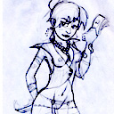

Forums galactiques > Taverne galactique : lieu de discussion informel > Machos vs Misophalles
Pages : 1
| Marianus Réputation à la taverne : 39 15/01 ETU 12:49 | Score : 8 Détails Un grand débat prenait une place importante … trop importante dans une salle destinée à l’humour. Malheureusement aucun grand psychologue, psychanalyste au sexologue se rabaisserait à tenir une conférence ou même répondre à la moindre question dans une salle destinée à l’humour … leur crédibilité en prendrait un coup.
Chaque chose à sa place, et une place pour chaque chose, ainsi pour votre bonheur mesdames, j’ouvre cette nouvelle salle. Donc cette salle est une salle de débats, et pourquoi pas une salle ce cours pour les commandants avant de dépenser une fortune à La Tour d'Argent pour impressionner sa belle. Un petit résumé de la situation : Suite à plusieurs blagues anti-blonde ou voir carrément machos la gente féminine au lieu de rire comme aurait fait chaque homme s’est révoltée. Pourquoi ? Bien sur ensuite des commandants bien intentionné tentent tant bien que de mal à sauver l’image de l’homme … mais le combat s’annonce difficile. Très difficile car, contrairement aux tomates, beaucoup d’homme n’arrivent jamais à maturité, … et de nature jalouse et susceptible les femmes ne font rien pour arranger les choses. Donc aux dernières nouvelles, un commun accord aurait été trouvé entre nos poêtes misophalles (=anti machos)et la gente féminine : des petits diners aux chandelles bien romantique Petite parenthèse, à tous ces commentaires mielleux de nos misophalles : Je ne sais que trop quoi en penser. Si c’était une tentative d’approche, voir de drague, sait-on jamais, … je préfère vous dire qu’avant il va falloir me revoir toute la psychologie féminine … oui il faut le reconnaître, homme et femme sont différents. Bon, de ma place privilégiée dans le ciel, ça m’arrive de remplacer mon collègue Cupidon, et à force je collectionne quelques secrets pour les hommes à la recherche de leur tendre moitié … … allez je vous en lâche un, l’originalité et humour (attention, humour qui plait aux femmes, c’est pas du tout le même que pour les hommes) et vous voilà prêt à confronter les plus grands défis … par exemple faire la cour à une demoiselle accompagnée de ses parents au restaurant… ça c’est du sport. Installez-vous en face de la table occupée par papa, maman et fifille. Regardez la mère quelques secondes, puis le père, … lorsque tous les trois s’interrogent de ce manège tournez vous vers la demoiselle en lui sortant : « T’as de beaux vieux tu sais ! » Fin de la parenthèse, la place est à vous mesdames, mesdemoiselles, et aussi messieurs (HRP : Merci à Pierre Desproges de nous livrer tant de secrets dans son livre « Manuel de savoir-vivre à l'usage des rustres et des malpolis ») | ||
| Acanith Réputation à la taverne : 1200  20/01 ETU 10:49 | Score : 1 Détails Bon, c'est pas la peine de me creuser la tête à ressortir un autre élan lyrique, on va remettre l'ancien...
Mesdame, sachez qu'il existe parmi nous des poètes idéalistes attachés aux idéaux de galanterie et de courtoisie qui vous paraissent, je n'en doute pas, d'un délicieux archaïsme. Laissez-moi donc, au nom de tous ces sentimentaux incompris, vous présenter des excuses humbles et plates pour notre activité hormonale qui parfois s'évade du carcan de notre Raison, et qui nous conduit à adopter un comportement que d'aucunes qualifieraient -à juste titre, hélas- de machos bornés à la con. "Délicieux archaïsme"... faudra le caler dans une dissert, celui-là... | ||
| Marianus Réputation à la taverne : 39 20/01 ETU 19:56 | Score : 2 Détails Je remercie Acanith pour ces précisions … parfois, bien souvent même, l’homme perd sa raison. Cela lui permet entre autre de se divertir de blagues bien grasses, au risque bien entendu de choquer la gente féminine. Mais j’ai aussi entendu des conneries à la taverne. Surtout quand c’est retombé dans le discours des non machos qui s’avèrent encore plus macho que nos buveurs de bière. Oui, je prends un petit côté lover, romantique, … aller je tente une invitation au restau, … comme quoi il n’y a pas besoin de boire de bière pour être macho.
Oui, nos poètes romantiques, galants et courtois … ayant des idées bien placés au final. Et la galanterie ? Qu’en penser ? N’est pas une forme plus raffinée de sexisme basée sur le fait que la femme naturellement plus fragile a besoin d’être protégée, assistée, … qu’en sais-je encore ? Et d’abord, pourquoi l’homme est-il sexiste, ou pire macho ? Uniquement plus qu’il a plus de muscle ? Voici un « petit » historique qui en vaut la peine. Les hommes et les femmes sont différents, il faut le reconnaître … et cela ne date pas d’hier. Oui, il y a fort longtemps, l’homme était contraint de chasser le mammouth dans des contrées lointaines. En gros, si tu étais musclé tu partais courir après les mammouths. Seul les plus forts en revenaient. Revenir vivant ne suffisait pas non plus, il fallait ramener de la viande, seul l’homme arrivant à repérer le moindre signe de gibier à l’horizon avait une chance de pouvoir capturer ce gibier. Mais bon, avoir des muscles et une bonne vision au loin ce n’est pas suffisant. Seul l’homme se repérant suffisamment bien dans l’espace arrivait à retrouver son chemin pour rentrer au bercail. De son côté la femme restait au bercail, sous prétexte qu’elle n’a pas assez de muscles pour allez chasser le mammouth. Si la femme donne la vie, comme l’homme ramène la nourriture, et qu’aussi accessoirement il a plus de muscles, il se croit tout de même supérieur. Cela lui donne le droit de ne faire que les rares tâches que la femme ne peut pas faire (chasser le mammouth) … en contrepartie la femme fait tout le reste (désolé les femmes, qu’on le veuille ou non, c’était le cas) … on est d’accord, ça à l’air bien macho. Mais n’oublions pas qu’à l’époque l’homme en contrepartie prenait le plus de risques, en gros, ne rien faire à la maison, c’était le privilège du guerrier. Puis les années sont passées, la sélection naturelle a fait son travail, et les différences homme/femme se sont accentuées. Donc seules les femmes possédant une forte poitrine réussirent à nourrir leur progéniture, mais également seules celles savant faire 15 choses à la fois. Car il ne faut pas oublier, elles avaient les marmots à courir dans les pattes, entre le bambin qui meurt noyé dans la rivière quand on va chercher l’eau, celui qu’on a perdu dans la forêt en allant chercher le bois, celui qui s’est brulé quand elle faisait la cuisine, celui qui s’est fait étouffer par ses frangins, celui quelle a oublier de nourrir ou de couvrir … il faut avoir l’œil partout. Donc seules les femmes pouvant faire 15 choses à la fois, penser à tout, qui avaient une bonne vision périphérique (large champ de vision pour voir tout ce qui est près) et une poitrine généreuse purent assurer leur descendance. Ça a beau faire des lustres, les méthodes de chasses ont évolué (maintenant c’est la femme qui ramène la nourriture en revenant du super marché), l’homme prend de moins en moins de risques au boulot, mais qu’on le veuille ou non, homme et femme héritent encore de ces particularités propres à chacun. Donc le constat actuel est que : La majorité des hommes sont encore plus forts que leur femme, arrivent à lire une carte routière, arrivent à voir du premier coup d’œil la bimbo qui se baigne les seins à l’air à 2km … mais sont incapables de retrouver le beurre dans le frigo. Bon la plupart d’entre eux est également incapable de gérer dignement un foyer (oh zut, chérie, j’ai carrément oublié !), de faire 2 choses à la fois ou tout simplement retenir une date d’anniversaire. Et la majorité des femmes, de leur côté, ne voient rien de ce qui sa passe à plus de 3m, mais sont capables de retrouver de premier coup d’œil le beurre dans le frigo, de faire la cuisine en donnant le biberon à la petite tout en étant au téléphone avec sa mère … et avec une petite pensée pour la lessive qu’il va falloir mettre en route. Pourtant il faut admettre que : Les muscles vous servent beaucoup moins qu’avant, l'homme ne risque plus sa vie tous les jours, les femmes travaillent à l’extérieur également et gagnent elles même leur pain, les enfants sont placés à la crèche, vous faites la cuisine au micro onde, … Le machisme a-t-il encore raison d’être ? N’empêche que, qu’on le veuille ou non, homme ou femme, vous êtes encore différents, inutile de le nier. Le machiste consiste à penser que, ces différences doivent se ressentir dans l’organisation sociétale, … et que l’homme ne doit pas se rabaisser à faire ce qui pourrait nuire à sa virilité. Pour ce qui est de l’organisation sociétale, cela part d’une bonne intention de tirer profit des différences de chacun … encore faut-il voir comment cela est appliqué. Le mot «différence» s’est malheureusement transformé en «inégalité». Et pour ce qui est de préserver la virilité des hommes … maintenant qu’ils n’ont plus besoin de courir après un mammouth, je ne sais pas ce qu’ils cherchent à prouver (ndlr : beaucoup de jeunes femmes accordent encore beaucoup d’importance à cette virilité dans des régions du monde où l’homme joue encore un rôle protecteur majeur, dans certains ghettos par exemple). Et celui qui me sort le grand scoop, je ne suis pas macho mais fait en sorte que ta femme soit heureuse, lui donner plus que tu reçois d’elle, …ah quel naïf de se croire à l’origine de bonheur de sa femme ! HRP : N'étant pas la science infuse, ni source de vérité absolue ... n'hésitez pas à intervenir également, débattre, critiquer, apporter votre point de vu ...sur tout ce qui touche à ce sujet .... euh avec une pointe d'humour si c'est possible | ||
| Acanith Réputation à la taverne : 1200 20/01 ETU 20:26 | Score : 3 Détails Cher Marianus, un point attire mon attention...
Vous avez dit (je vous paraphrase, n'ayant pas la foi de citer...) qu'être galant revenait à admettre l'existence d'inégalités entre hommes et femmes, et à subordonner la femme à l'homme en vertu d'une quelconque idée de "protection". Mais qui a prétendu qu'il n'existait pas de différences entre hommes et femmes? La démarche de l'égalitarisme borné est totalement stupide, il est naturel d'établir une distinction entre les deux sexes (rien qu'au niveau anatomique, par exemple). Ce qui l'est moins, c'est de servir de ces distinctions pour établir une relation de hiérarchie, de subordination. Pour moi, les liens entre les deux sexes doivent s'épanouir dans leur diversité qui fait toute la richesses des échanges humains. Les idées de protection, de "sexe faible", étaient certes valables à l'époque préhistorique que vous décrivez... Mais ils sont totalement éculés à l'heure actuelle, alors que bon nombre des Commandants de l'Assemblée sont des femmes! La force a cessé d'être la seule qualité digne de respect dans notre société, l'intelligence, autrefois méprisée, est aujourd'hui reconnue comme le meilleur instrument de la survie. Croyez-vous que notre espèce a supplanté ses prédateurs par la force de ses bras? La femme n'a aujourd'hui pas plus besoin de protection que l'homme, pas plus qu'elle est moins intelligente qu'un homme, et l'Humanité commence à peine à en prendre conscience! Pas sur tous les Mondes, hélas, on peut le voir dans les messages de certains à la Carambar Party... Ce processus de reconnaissance du statut de la femme est selon moi la marque de l'évolution spirituelle et intellectuelle d'une société, dans laquelle, plus qu'une liberté de pensée, les gens ont accès à une "pensée libre"! Car, libérés du carcan de leurs pulsions instinctives par l'introspection, libérés de l'emprise de l'opinion de la masse par la réflexion, nous, individus, avons atteint un niveau de conscience éclairé qui nous oppose, définitivement je l'espère, à nos ancêtres préhistoriques. Enfin, je considère pour ma part la galanterie comme une forme de courtoisie (interessée il faut bien l'avouer...). Me reprocheriez-vous de conclure ce message par mon traditionnel... ...Mes respects ? Ou là... Pourtant j'ai rien fumé, je vous jure! Putain mais je me suis enflammé! J'imagine que vous vous demandez ce que j'ai essayé de dire... Moi aussi! CPVP. Envoyez vos dons. | ||
| Lizaka Réputation à la taverne : 2723  20/01 ETU 21:58 | Score : 3 Détails Hommes, rebellez-vous !
Mâles, gagnez votre liberté ! Le couple traditionnel est une prison dont le geôlier est la femme. L’amour fidèle est devenu un asservissement à la volonté féminine. Regardez les misérables que vous êtes devenus, courbés pour plaire à celle qui vous a séduit pour vous dominer. Ses caprices sont maintenant votre seule raison de vivre. Gentils esclaves, au service de la Maîtresse. Hommes, réveillez-vous ! Mâles, la tyrannie femelle doit cesser ! Ne craignez plus les regards accusateurs, les acerbes colères, les menaces de partir chez la mère. Ne lui ouvrez plus la porte comme un portier bénévole, ne lui faites plus les baisemains qu’elle adore, rejetez son monopole dans le choix des programmes TV ! Vive l’égalité des sexes ! Je sens que ça va faire beaucoup de célibataires… | ||
| Demettra Réputation à la taverne : 348  20/01 ETU 22:39 | Score : 0 Détails Je n'y vois aucun inconveniant, mais n'attendez pas de fidèlité de la part des femmes....
| ||
| Célinha Réputation à la taverne : 55  22/01 ETU 09:49 | Score : 1 Détails Je peux ajouter quelque chose aux "conseils de drague".
Pour ma part, un grand bavard a tendance à me faire fuir. Beaucoup d'hommes (tout est relatif) pensent m'impressioner en étalant leur savoir et leurs connaissances diverses deavnt moi. Je suis d'accord, je fais plus jeune que mon âge et quand je bois un coup à la taverne, j'ai parfois un rire un peu naïf. Cependant, surtout avec un coup dans le nez, les longs discours, les monologues également, m'ennuient. Même si parfois ils me font rire car certains hommes (plutôt des garçons) pensent m'apprendre un tas de choses sur la vie et la science. Parfois, quand ils sont plutôt mignons, je fais un effort. Mais il y a des fois où je ne peux pas me retenir de les envoyer balader, ou mieux, de leur démontrer qu'ils ont tord. Tous ça pour dire que c'est pas pask'on est une (jeune) fille qu'on sait pas grand chose. J'ajouterais que je suis un peu garçon manqué, et que parfois, l'humour gras me fait bien rire. Même si l'humour subtil et légèrement bebête (à la desproges quoi) reste le must de la drague. (selon moi) | ||
| Le Juste Réputation à la taverne : 41  22/01 ETU 10:20 | Score : 2 Détails Je rejoint l'idée du message de la demoiselle Celinha, en effet il n'existe pas de conseils de drague qui fonctionne de manière sûre.
Le meilleur conseil serait ed rester soit même mais certains rustres ne sont pas là pour ça ainsi, apprenez à chercher ce qu'attend votre compagne pour l'atteindre. Enfin vous savez ce que l'on dit: L'amour... il y a ceux qui en parlent et il y a ceux qui le font. A partir de quoi il m'apparait urgent de me taire. (Pierre Desproge) J'ai pas pu m'en empêcher quand tu as parlé de Desproge ^^ |
Pages : 1
Forums galactiques > Taverne galactique : lieu de discussion informel > Machos vs Misophalles